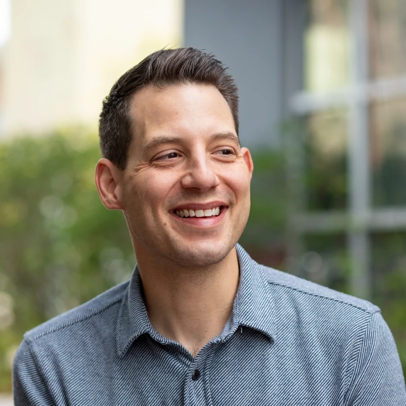

Initial Capacity

Tyson Gern, PhD
Founding partner at Initial Capacity.
Lead developer, founder, and speaker helping teams build software that works at scale.
Engineer
Leader
Speaker
Mathematician
Engineering Narrative
I'm a founding partner at Initial Capacity, a software consultancy of lead developers building applications for startups and the world's largest companies. I'm a firm believer that the first few weeks of a new codebase may just be the most important code you'll write.
I came to software from mathematics. I lecture at the University of Colorado Boulder, teaching the next generation of engineers the nuances of software development and system design.
Before Initial Capacity, I spent eight years at Pivotal Labs, working with some of the world's most complex engineering organizations to transform their delivery practices. My PhD in Mathematics informs my perspective on logic, structure, and engineering elegance.
Expertise
-
Shipping Software
Building with AI Tools, Short Iterations, & Fast Feedback
-
Building Teams
Pairing, Mentoring, & Growing Lead Engineers
-
Architecture and Design
Distributed Systems, Big Architecture, & Scalability
-
Data & Research
Mathematical Modeling, Insights, & Analysis
Work with me